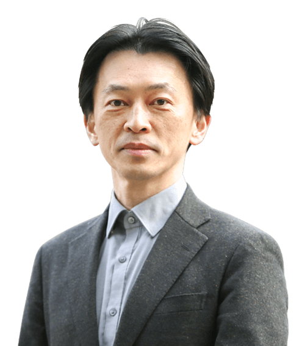

数学は難しい？ → いいえ、道具です。
数理・情報科学課程は、数学と情報科学を「難しい科目」ではなく「世界を読み解く道具」として学ぶ場所です。
課程をのぞいてみよう
数理・情報科学課程って、どんな学び？
複雑で変化の激しい現代の科学技術の世界では、様々な分野が互いに関連しあいながら新しいものが生まれています。数学や情報科学は、分野の枠を越えて物事の本質にせまり、課題を分析し解決するための道具となります。数理・情報科学課程では、物事を論理的に考え適切に表現する力、課題を数学的・数量的に分析し解決する力、IT社会に柔軟に対応し活躍できる力を備えた人材の育成を目指します。
課程のトピック
優秀プレゼンテーション賞
センタンLAB（先端理工学部スペシャルサイト）
21の学びのプログラム（データサイエンス・人工知能・情報科学・数理解析・現象の数理）
BYOD（ノートPC必携化）
R-Gap・プロジェクトリサーチ：約3ヶ月間（3年次の6月中旬〜9月中旬）の自主活動期間
STEAMコモンズ：「ものづくり」と「デザイン」のためのファブ施設
オープンキャンパスで大人気だった企画
2024年度オープンキャンパスで実施した企画
EXHIBIT
分散アルゴリズムを学ぼう
角川研究室
EXHIBIT
画像AIで遊ぼう！
馬研究室
EXHIBIT
高校数学と大学数学の違い
深尾研究室
EXHIBIT
AIで農業支援！
佐野研究室
先生たちに会ってみよう
キャラクター選択みたいに、指でスライドしてチェック →

AIと脳のナゾに挑む
佐野彰／助教
人工認知・数理脳科学

変化する式を追いかける
深尾武史／教授
発展方程式

機械に「わかる」を教える
高橋隆史／准教授
人工知能（機械学習、パターン認識）

コンピュータに言葉を読ませる
馬青／教授
自然言語処理（知能情報学）

たくさんの機械を賢く動かす
角川裕次／教授
分散アルゴリズム

形とかたちの数学を探る
山岸義和／准教授
応用幾何学